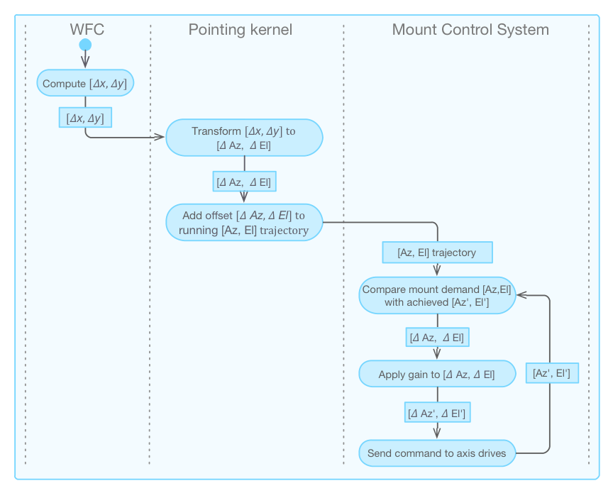

3. Telescope Control System¶
The Telescope Control System (TCS) encompasses the subsystems in charge of the control of the telescope optomechanical devices. The design considerations of the TCS provide a solution that seamlessly unifies the different modes of operation: natural seeing, ground-layer AO (GLAO), laser tomography AO (LTAO), into one system that is coherent, easy to manage, maintain, and upgrade.
The TCS subsystems are organized in a control and supervisory subsystem hierarchy that mirrors the physical arrangement of the telescope subsystems. At the bottom of the hierarchy, device control subsystems take care of the control and operation support for the independent telescope hardware devices. These devices are developed following different timelines and procurement paths (e.g., M2 positioner, M1 control system, Mount control system). This separation is similar to the one used in other telescope projects and provides a modular design that facilitates interface definition, development planning, and integration and commissioning activities. Often these subsystems will have an independent Factory Acceptance Test process prior to integration at the observatory. Each device control subsystem follows the reference architecture as described in Device Control Framework. In addition, to the device control subsystems – mainly concerned by mechanical degrees of freedom – two subsystems provide high-level coordination and control functions: the Pointing Kernel and Wavefront Control System (WFCS).
The Wavefront Control System provides the high-level optical control of the telescope. The Pointing Kernel relates sky coordinates with mechanical and detector coordinates and vice versa. The wavefront control and pointing kernel subsystems coordinate these low-level device control subsystems to point the telescope and move probes to the corresponding targets, to achieve and maintain the nominal optical configuration, and to close the wavefront correction loops during the execution of an observation. Observations and other operations are defined and automated using the tools provided by the observatory operations system (e.g., observing tools, sequencer).
Although the most critical function of the TCS is the control of the hardware devices, efficiency, safety, and robust operations are also essential to operations. Those considerations lead to a design of the TCS that also has the following functionalities:
- Calibration. In many subsystems, calibration software is required to produce error maps or look-up tables that allow the control system to perform with the necessary accuracy.
- Diagnosis. Some of the GMT hardware subsystems are quite complex. Specific software components are often required to verify the behavior of the system or to troubleshoot it in case of incorrect behavior.
- Safety. There are some scenarios where a hardware device could be damaged due to incorrect operation. The Interlock and Safety System (ISS) is ultimately responsible for preventing any damage to equipment or injury to people by the telescope. The ISS may “kick-in” in a drastic way. Safety control components implement a safe operation that avoids the engagement of the ISS.
- Supervision. Often the operation of a subsystem involves the coordination of several subordinate components. It is then the TCS’s responsibility to guarantee that subordinate components are in the correct state, and that the performance degrades gracefully in off- nominal scenarios. In addition to managing the configuration, startup, and shutdown of the control subsystems and hardware devices, supervisory components also implement kinematic transformations or anti-collision protection strategies when the system under control requires it.
The sections below give an overview of the TCS. TCS Subsystems provides a summary of the subsystems inside the TCS, followed by the degrees of freedom that the TCS controls in Degrees of Freedom. The Requirements on TCS, Pointing, Tracking & Guiding section presents the requirements governing the TCS design and operations, followed by details of the Pointing Kernel. Lastly, the Section on Wavefront Control (TBC...) briefly describes the architecture of the GMT Wavefront Control System (WFCS), and the specific designs of the GMT Natural and AO observing modes.
3.1. Subsystems¶
The previous section introduces the concept of Device Control Subsystems. The Figure below shows the TCS device control subsystems, organized in functional categories. Each subsystem includes the required software packages as described in Modules: Subsystem, Packages, Components.

Fig. 11 TCS Subsystems Overview
3.2. Degrees of Freedom¶
The table below shows an overview of the different elementary mechanical degrees of freedom of the telescope subsystems (AO subsystems are not included in this table). Axis groups are identified specifically. The first column identifies the name of the mechanism; the second column the number of instances; the Axes column identifies the number of axes per instance; the DOF column identifies the total number of degrees of freedom; the Controller Profile Mode column identifies the motion control profile as defined in IEC 61800-7 [IEC61800-7-1]; and the Actuator Type column identifies the generic category of the actuator.
| Mechanism | # | Axes | DOF | Controller Profile Mode | Actuator Type | |
|---|---|---|---|---|---|---|
| M1 | ||||||
Hardpoint X, Y, Z
|
7 | 6 | 42 | Interpolated Position | Axis Group | |
| Hardpoint Actuator | 42 | 1 | 42 | Cyclic Synchronous Position | Servo motor | |
Triple Support
|
595 | 3 | 1785 | Force | Pneumatic | |
Single Support
|
560 | 1 | 560 | Force | Pneumatic | |
Fan Assemblies
|
322 | 1 | 322 | Profile Velocity | 3-Phase Fan | |
Mixing Valve
|
7 | 1 | 7 | Profile Position/Velocity | Valve/Pump | |
Mirror Cover (off-axis)
|
6 | 1 | 6 | Profile Position | Servo motor | |
Mirror Cover (on-axis)
|
6 | 1 | 6 | Profile Position | Servo motor | |
| M2 | ||||||
Positioner X, Y, Z, Rx, Ry, Rz
|
7 | 6 | 42 | Interpolated Position | Axis Group | |
| Linear Actuator | 42 | 1 | 42 | Cyclic Synchronous Position | Stepper Motor | |
FSM, Tip, Tilt, Piston
|
7 | 3 | 21 | Interpolated Position | Axis Group | |
| FSM Actuator | 21 | 1 | 21 | Cyclic Synchronous Position | Piezo | |
FSM Pres/Vac Support
|
7 | 1 | 7 | Profile Position | Pneumatic Valve | |
| M3 | ||||||
Deployment
|
1 | 1 | 1 | Profile Position | Servo motor | |
Rotation
|
1 | 1 | 1 | Profile Position | Servo motor | |
Tip, Tilt, Piston
|
1 | 3 | 3 | Interpolated Position | Axis Group | |
| M3 Actuator | 3 | 1 | 3 | Cyclic Synchronous Position | Servo motor | |
| AGWS Probe Arms | ||||||
AGWS Arm Stage
|
4 | 3 | 12 | Interpolated Position | Axis Group | |
| Azimuth | 4 | 1 | 4 | Cyclic Synchronous Position | Servo motor | |
| Radial | 4 | 1 | 4 | Cyclic Synchronous Position | Servo motor | |
| Focus | 4 | 1 | 4 | Cyclic Synchronous Position | Servo motor | |
Pick-off Mirror Tilt
|
4 | 1 | 4 | Profile Position | Voice Coil | |
Fold Mirror Tilt
|
4 | 1 | 4 | Profile Position | Voice Coil | |
Sensor Select
|
4 | 1 | 4 | Profile Position | Servo motor | |
Ap/Cal Source Select
|
4 | 1 | 4 | Profile Position | Servo motor | |
TT7 De-Rotation
|
4 | 1 | 4 | Profile Position | Newport motor | |
| AGWS Phasing Camera | ||||||
Phasing Camera Stage
|
1 | 3 | 3 | Interpolated Position | Axis Group | |
| Azimuth | 1 | 1 | 1 | Cyclic Synchronous Position | Servo motor | |
| Radial | 1 | 1 | 1 | Cyclic Synchronous Position | Servo motor | |
| Focus | 1 | 1 | 1 | Cyclic Synchronous Position | Servo motor | |
Pick-off Mirror Tilt
|
1 | 1 | 1 | Profile Position | Voice Coil | |
Fold Mirror Tilt
|
1 | 1 | 1 | Profile Position | Voice Coil | |
| AGWS On-Axis AGWS | ||||||
OAWFS Depolyment
|
1 | 1 | 1 | Profile Position | Servo motor | |
OAWFS Focus
|
1 | 1 | 1 | Profile Position | Servo motor | |
Sensor Select
|
1 | 1 | 1 | Profile Position | Servo motor | |
Ap/Cal Source Select
|
1 | 1 | 1 | Profile Position | Servo motor | |
Pick-off Mirror Tilt
|
1 | 1 | 1 | Profile Position | Servo motor | |
| Mount | ||||||
Azimuth Axis
|
1 | 1 | 1 | Cyclic Synchronous Position | Axis Group | |
| Azimuth Forcers | 4 | 1 | 4 | Cyclic Synchronous Torque | Servo motor | |
Elevation Axis
|
1 | 1 | 1 | Cyclic Synchronous Position | Axis Group | |
| Elevation Forcers | 4 | 1 | 4 | Cyclic Synchronous Torque | Servo motor | |
HBS Pump
|
1 | 1 | 1 | Profile Velocity | Induction motor | |
Azimuth Cable Wrap
|
1 | 1 | 1 | Cyclic Synchronous Position | Servo motor | |
Elevation Cable Wrap
|
2 | 1 | 1 | Cyclic Synchronous Position | Servo motor | |
Locking Pins
|
2 | 1 | 2 | Profile Position | Linear Actuator | |
Counter Weights Vertical
|
4 | 1 | 4 | Profile Position | Servo motor | |
Counter Weights Horizontal
|
2 | 1 | 2 | Profile Position | Servo motor | |
| GIR | ||||||
Rotation Axis
|
1 | 1 | 1 | Cyclic Synchronous Position | Axis Group | |
| Friction Actuator | 2 | 1 | 2 | Cyclic Synchronous Torque | Servo motor | |
GIR Cable Wrap
|
1 | 1 | 1 | Cyclic Synchronous Position | Servo motor | |
GIR Counter Weights
|
1 | 2 | 2 | Profile Position | Servo motor | |
DG Instrument Deployment
|
4 | 1 | 4 | Profile Position | Linear Actuator | |
| Corrector-ADC | ||||||
Deployment
|
1 | 1 | 1 | Profile Position | Stepper motor | |
Locking Mechanism
|
2 | 1 | 2 | Profile Position | Pneumatic | |
Prism Rotators
|
2 | 1 | 2 | Cyclic Synchronous Position | Stepper motor | |
| Total | 76 | 3005 | ||||
There are a total of 77 different types of axes; some of them have multiple instances, for a total of 3005 mechanical degrees of freedom. Despite this large number, only 5 motion control profiles, based on the IEC 61800-7-201/301 [IEC61800-7-201] [IEC61800-7-301] standard, are necessary to implement the elementary degrees of freedom. This enables the possibility of a standardized motion platform.
3.3. Requirements on TCS, Pointing, Tracking & Guiding¶
The requirements governing the TCS and telescope motion control flow several levels down from the System Level to the SWCS level(s). Broadly, the requirements of the TCS address: initial blind pointing accuracy, pointing accuracy, tracking modes, continuous scan, pointing offsets, acquisition and reacquisition and, finally, special requirements on the active optics, with details to follow below.
Blind pointing relies entirely on the mechanical positional accuracy of the telescope encoder systems on the telescope axes and lookup tables to slew the telescope to the desired sky [α, δ] or mount [Az, El] coordinates. Blind pointing occurs in open loop (active optics and adaptive optics), and is used to position the telescope to within the capture range of the AGWS in the GIR, with which to achieve higher accuracy pointing and guiding on targets. Typically, an initial blind pointing is performed once in the beginning of the night to remove systematic errors due to temperature and flexure, so as to establish a nominal pointing origin, and fine-tune the initial pointing model for the night. Subsequent blind pointing checks may be required throughout the night to achieve the higher precision.
After the telescope positions a target to within the capture range of the AGWS via blind pointing, the four probes of the GIR will reposition to acquire guide stars in the telescope focal plane, which improves the pointing to sub-arcsecond accuracy. The fine pointing accuracy requirements are referenced to, and measured at, the center of the field of view delivered to the science instruments located at either the direct Gregorian or folded ports, under natural seeing. To meet the requirements for fine pointing, it is necessary to correct for the physical offsets and differential flexure between the science instrument and the telescope via the pointing model.
Telescope tracking keeps a celestial coordinate position fixed in the field of view, by rotating the telescope elevation, azimuth, and GIR axes. Tracking uses look-up tables that account for mount errors and relative flexure between the telescope structure and the instrument.
Fine guiding operates in closed loop, using the positions of guide stars on the AGWS or On-Instrument Wavefront Sensor (OIWFS) to make slight adjustments to maintain much more accurate telescope positions, removing the effects of wind buffeting, mechanical errors, time-dependent flexures, or other perturbations. Guiding adjustments are small corrections on top of the telescope sky-tracking rate. GMT will use four guide-probes in the AGWS to sense pointing and guiding errors in three axes (elevation, azimuth, and rotation in GIR).
Several tracking modes will be implemented: Sidereal, non-sidereal, GIR fixed rotator, GIR field, GIR parallactic, and GIR fixed pupil. Non-sidereal tracking is used for scanning or for solar system targets where the AGWS and the OIWS track at the sidereal rate while the telescope mount guides on the science target to maintain its position fixed in the science detector reference frame.
Drift scanning is an observing technique to obtain imaging or spectroscopy data over an area of the sky by allowing the telescope pointing to drift at a constant rate relative to the sky motion. During scanning, depending on the science goal, the science detectors may be synchronized and read out continuously to minimize image smearing, or they may stay in continuous integration. In continuous scanning mode, the AGWS continuously tracks guide stars to maintain mirror figure and pointing accuracy. However, as the guide stars may move outside the guider field during integration, the pointing kernel is responsible for finding and reacquiring guide stars somewhere in the field seamlessly and automatically.
Pointing offsets are used during observing to reposition the science detector relative to the pointing origin of the telescope. Offsetting is used for many purposes, such as to obtain sky observations, to position objects onto a slit or aperture, to create mosaic observations, etc.
The telescope pointing kernel, in cooperation with the WFCS system, performs telescope pointing, tracking, acquisition, and guiding. There are requirements for the different observing modes (natural seeing, LTAO, NGSAO). In the event that the active optics system is disabled, the pointing kernel is required to continue telescope guiding and tracking.
3.4. Pointing Kernel¶
The telescope pointing kernel (Figure below) is the subsystem that performs essential services to point the telescope to a desired sky location, to track the sky rotation, and to provide fine guiding on a target. The outputs of the pointing kernel are mechanical encoder values that are used to command repositioning of the mount and the instrument rotator (blue boxes in Figure below). The GMT pointing kernel is built on the TCSpk [Wall12a], tpk [Terr06], and SLALIB [Wall12b], packages developed by TPoint Software. The pointing kernel:
- Predicts the mount encoder angles required to image a specific coordinate on the sky to a given location in the focal plane
- Provides accurate mapping of the World Coordinate System (WCS). For example to enable mapping of celestial coordinates onto locations in the focal-plane, and vice versa, using SLALIB [Wall12b] to account for atmospheric refraction, pressure, temperature, Earth’s precession, nutation, light deflection, etc.
- Enables telescope tracking and autoguiding
- Allows rapid repositioning of the telescope to transfer an imaging field from one focal plane (e.g., an acquisition device) onto another (e.g., instrument detector), thereby enabling fast dithering and precise blind positioning onto slits and fibers
- Allows multiple coordinate systems to be active at the same time allowing, for example, tracking of a planet while guiding on a star
- Handles autoguiding in an integrated way, with differential refraction and atmospheric dispersion being taken care of at a system level
These features will be available in all natural seeing and AO observing modes.

Fig. 12 Telescope Pointing Kernel
The telescope pointing kernel is composed of three primary components: Target Server, Supervisor, and Virtual Telescopes. The functions of each component are briefly described:
- Target Server (pk_target_server) – The Target Server is the high level server telling the telescope where in the sky or at which targets to aim. It possesses high-level knowledge about the science program being observed, i.e., the science targets, the guide stars needed to perform an observation, and the desired pointing location on an instrument. The server takes as inputs an observing definition (e.g., observing templates produced from the Phase 2 proposal) and object catalogs, and produces a set of coordinates to send to the pointing kernel supervisor for implementation. For telescope dithering, the target server receives and interprets the dithering strategy to provide coordinates to reposition the telescope.
- Supervisor (pk_supervisor) – Most components (e.g., subsystems and devices) involved in telescope pointing, tracking, and guiding, merely act on the data and instructions provided to them without regard to the overall purpose. However if, for example, the WFCS fails to acquire a guide star, or a guide star moves outside the guide field (for guiding on a non-sidereal target) a supervisor must decide on a corrective course of action. The pointing kernel supervisor provides the intelligence to decide what actions to take in the event of success or failure in acquisition and guiding. In addition, the pointing kernel supervisor implements the pointing model; maintains the context for slow, medium and fast guiding and tracking calculations; and manages which virtual telescopes are active at any given time.
- Virtual Telescopes (vt) – A central concept in TCSpk is the “Virtual Telescope”, which takes as input a desired coordinate and performs the detailed transformations necessary to make accurate telescope pointing a transparent process. As viewed from the perspective of end-users and software control interfaces, the virtual telescope therefore appears like a perfect telescope. The virtual telescope relates three pieces of information necessary to position the telescope: the mount directional pointing [Az, El], the location of an image in an instrument focal plane [x, y], and the celestial coordinate of a target [α, δ]. Knowing two out of the three quantities, the virtual telescope can predict the third. The virtual telescope enables one to position a target fixed at any location and orientation on an instrument, accounting for the rotator angle. There is at least one virtual telescope assigned to each focal station that has an instrument. Each instrument can have multiple virtual telescopes that have different pointing origins to allow fast dithering, accurate positioning of a target onto a slit or fiber aperture, and other purposes. The virtual telescope generates mechanical demands to the mount encoders to reposition the telescope.
3.4.1. Telescope Pointing Software Libraries¶
The TCS pointing and tracking control will be built around a core set of software libraries: TCSpk [Wall12a], SLALIB [Wall12b], and tpk [Terr06], which are used on many telescopes currently in operation, e.g., Magellan, Keck, GTC, VLT, Gemini, and LBT. The software libraries provide the following functionalities:
SLALIB [Wall12b] – A library of over 200 functions in ANSI C for positional astronomy, SLALIB comprises functions and numerical methods that calculate spherical trigonometry, vectors and matrices, and coordinate and time transformations required to achieve milliarcsecond pointing accuracy to celestial targets. Key examples of positional astronomy computations and transformations performed by SLALIB include:
- Celestial – catalog coordinates such as FK4, FK5, galactic, geocentric coordinates, ICRS, proper motion, target proper motion, parallax, and radial velocity.
- Terrestrial – atmospheric refraction, diurnal aberrations, precession and nutation, mean place to apparent and observed place, focal plane astrometry.
- Time – time systems (UTC, GST, LAST, etc.), calendar, epochs, ephemerides
SLALIB supports both IAU 2000/2006 precession-nutation and Earth rotation models in both classical (equinox-based) and Conventional International Origin forms. Details of the celestial coordinate systems used by the TCS and the transformation flow going from user specified celestial coordinates to observed directions are discussed below.
TCSpk [Wall12a] – A library of roughly 70 functions in ANSI C makes up the TCS Pointing Kernel (TCSpk), around which the TCS is designed. The TCSpk library provides modular functions that can be assembled in flexible ways to implement telescope pointing patterns and strategies, and that place few constraints on the design and potential capabilities of the TCS. TCSpk interfaces with SLALIB for positional astronomy calculations so that the complexities of transforming coordinates are transparent to the designer. TCSpk also interfaces with TPOINT for calculating pointing corrections.
tpk [Terr06] – The Telescope Pointing Kernel (tpk) is a C++ library of classes that is layered on top of TCSpk and SLALIB to create virtual telescopes (see below) for the mount, rotators, guiders, instruments, etc., and to produce encoder angle demands that point the telescope, and that position rotator and guiders based on inputs from the virtual telescopes.
TPOINT [Wall94] – Software for analyzing telescope pointing, TPOINT helps to assess and measure misalignments and flexures in the telescope and instruments. Data produced by TCSpk / tpk interface directly with TPOINT for analysis, while collimation and flexure errors measured by TPOINT can directly feed back into TCSpk / tpk to reduce pointing errors.
3.4.2. Workflow: Tracking, Pointing, and Guiding¶
The pointing and tracking for the GMT will follow a similar scheme as that used by some of the monolithic and segmented telescopes currently in operation (e.g., Magellan, VLT, Keck, GTC). The TCS does not manage image stacking of the seven mirror segments individually. That responsibility falls to the WFCS subsystem, which performs optical collimation, mirror figure shaping, and phasing of the seven M1 and M2 segments. Each observing mode (LTAO, NGSAO, natural seeing) has its own WFCS control loop. If there are residual, time-averaged, tip-tilt values from M1 and M2, the WFCS offloads the values to the TCS, which causes the mount to reposition. Doing so cleanly separates mount control from active optics and AO so that the TCS needs only to have a conventional scheme for telescope pointing. From the standpoint of telescope pointing, tracking and guiding, it therefore makes no practical difference whether the observing mode is natural seeing (using fast tip-tilt M2) or AO (using ASMs). Details of telescope collimation and phasing for the different observing modes (natural seeing, NGSAO, GLAO, LTAO) are discussed in Wavefront Control.
Telescope tracking, pointing, and guiding, follow the schematics shown in the three Figures below, and summarized here:
Sky Tracking - When the telescope operator initiates telescope sky tracking (Figure below), the pointing kernel transforms the current mount location in [Az, El] into a sky coordinate in [α, δ], then generates an [Az, El] trajectory to follow the sky motion (details of coordinate transformations are discussed below). The stream of coordinates produced by the pointing kernel feeds into the mount control system (MCS) servo loop. The servo loop then compares the mount [Az, El] position with the time-stamped demands and moves the mount so as to minimize the difference, i.e., the error signal. When the MCS receives a new coordinate the current one is immediately discarded. Details of the MCS are presented in the Telescope Chapter.
The pointing kernel also generates coordinate streams for different sky-tracking modes using the virtual telescopes, such as non-sidereal tracking, drift scanning, and maintaining the pointing origin at a fixed [α, δ] with the rotator turned off, or with the instrument fixed at a constant position angle. Doing so requires coordinating the rotation of the GIR as well as rotation/translation of the telescope mount axes, all of which are performed by TCSpk.

Fig. 13 Sky Tracking Workflow
- Pointing - Like with telescope tracking, the act of pointing the mount utilizes only mount encoder information. As shown in the Figure below, to point to a new location in the sky, the user provides a coordinate [α, δ] or [Az, El] to the TCS. The pointing kernel translates the input coordinate into mount [Az, El] demands. Upon receiving the demands, the MCS servo loop repositions the mount. If the telescope is already in tracking mode when it arrives at the new location, the mount motion continues along the tracking trajectory. Without sky-tracking, all mount motion would come to a stop as soon as the mount arrives at the demanded location. Details of the telescope pointing sequence are provided in the Operation Concept Definition Document (OCDD) GMT-AO- REF-00244 [Tran13].

Fig. 14 Telescope Mount Pointing Workflow
- Autoguiding - The process of autoguiding is shown schematically in the Figure below; details of the sequences involved in setting up autoguiding are provided in the OCDD. Like with telescope tracking, the pointing kernel is responsible for producing trajectories based on a given [α, δ] coordinate and instrument orientation. The responsibility for calculating fine corrections using guide stars falls to the Wavefront Control System, which decides whether to apply the translational motions to the mirror optical assembly or to offload them to the telescope mount via the pointing kernel. In this scheme, the telescope pointing kernel is oblivious to whether the offload is due to autoguiding or for other reasons. Offloads to the pointing kernel from the WFCS are delivered to the pointing kernel as guiding corrections, from which the pointing kernel produces an appropriate trajectory for the MCS servo loop.
Fig. 15 Target Autoguiding Workflow
3.4.3. Coordinate Systems and Transformation Flow¶
There are several coordinate systems in common use in astronomy. When an astronomer specifies a target coordinate, that information often needs to be transformed into another system before it can be used to command the telescope to a [Az, El] location and for telescope tracking. The general implementation strategy for pointing, tracking, and guiding involves two transformations. First the transformation of target coordinates from celestial [α, δ] (or [Az, El]) into an observed direction [Az, El] to point the telescope, accounting for: coordinate systems, space motions, Earth motions, refraction, and other non-instrumental terms. Next the pointing kernel transforms observed [Az, El] direction into mechanical encoder direction for the mount, via a “pointing model” to account for: misalignment of the mount, tube flexure, instrument flexure, etc., as well as user desired pointing origin, and offset from base (e.g., for scanning).
Fully specifying a target’s location in the sky requires the following information:
- Coordinates – In [α, δ] or [Az, El].
- Coordinate system – e.g., whether the [α, δ] is in FK4, FK5, or Topocentric apparent system.
- Equinox – e.g., B1950.0 or J2000. Before 1984, the equinox is usually in the B system, whereas on or after 1984, it is usually in the J system. The default is to assume J2000, FK5 coordinate system.
- Epoch – For objects that have proper motions, this is the time-zero from which proper motions are calculated. The epoch is generally specified as a given year (e.g., 1964.25).
- Proper motion – There are various units for proper motion (arcsec yr -1, arcmin century -1, etc.). By default proper motion is zero.
- Parallax – Usually has units of [arcsec], and the default value is zero.
- Radial velocity – Usually has units of [km s -1], and the default value is zero.
Supported coordinate systems and the subsequent transformation flow are described below.
Coordinate Systems
The coordinate systems that will be supported are listed and described in the Table below; the default will be ICRS:
Table 4 Coordinate Systems Supported by the TCS¶ Coordinate System Description Celestial Coordinate System Transformation Flow
Given a coordinate [α, δ] in any celestial coordinate system by an astronomer, the TCS will convert it to FK5, J2000, and the current epoch, before producing the apparent [α, δ] used to aim the telescope. The transformation flow and the terms to correct for are given in the following Figure. The TCS uses SLALIB [Wall12b] to transform celestial coordinates into an apparent direction to point the telescope. New coordinate systems will be supported as interests and needs arise by upgrading or replacing SLALIB with another tool.

Fig. 16 Transformation Flow
The above Figure shows the transformation flow taking coordinates from one reference frame to another, adapted from Wallace [Wall12b]. All input coordinates are eventually converted into FK5, J2000, current epoch, before final conversions to apparent [α, δ] to point the telescope.
Transformation of Celestial System to Mount Encoder Positions
The TCS/MCS Pointing Flow Figure (below) shows the steps taken to convert celestial coordinates [α, δ] into instrumental direction [Az, El] and rotator angles that the mount servo system needs to position the telescope. There are two flow directions, distinguished by how often the information needs to update: downward (slow, ≳20 Hz) and upward (fast, ≫20 Hz). The downward direction (upper half of Figure) first transforms target celestial coordinates into a corresponding line-of- sight [Az, El] coordinate, correcting for terms that are independent of the telescope mount. Those terms include: aberrations (annual and diurnal), light deflection, precession/nutation, Earth’s rotation, motion around the sun, parallax, and refraction.
Next, additional errors factor in via pointing models (blue box, and see Virtual Telescope Figure (below)), such as mount non-perpendicularity and tube flexure. A pointing model consists of a set of coefficients that accounts for non-perpendicularity of the telescope axes, imperfections in alignment, flexure, or other mechanical imperfections. Lastly, to position the target coordinate at the user desired locationon the science detector (i.e., a slit or image pixel), it is necessary to offset the pointing origin to that location, which involves adjusting the rotator angle and position offset relative to the optical telescope axis. The above transformations result in the actual demand, angle [Az, El] for aiming the telescope mount.
In contrast, upward transformations (lower half of Figure) take place at much higher frequencies (≫20 Hz), the purpose of which is to react to fast mechanical positioning demands, such as target scanning, tip-tilt guiding, wind perturbations, AO closed loop operations, image centroiding, and encoder errors. The telescope Az/El servo system compares the mount demand (downward flow) versus that achieved (upward flow) to determine the appropriate actions for the mount.

Fig. 17 TCS/MCS Pointing Flow. The blue box is the telescope pointing model, details of which are elaborated in the Figure below on the Virtual Telescope. Horizontal arrows indicate the different pointing coordinates: Mean [α, δ], Apparent [α, δ], Topocentric [-h, δ], Observed [Az, El], and Mount [Az, El], users may specify and where they enter the flow in the transformation.
The TCS/MCS pointing flow, above, adapted from Wallace [Wall12a], shows the transformation flow that takes target positions from the TCS (e.g., celestial coordinates [α, δ]) into mount encoder demands delivered to the MCS servo systems (in small box). Details of the pointing model, blue box, are elaborated in the Figure below on the Virtual Telescope.
3.4.4. Virtual Telescopes and the Telescope Pointing Model¶
The concept and use of a Virtual Telescope was introduced earlier, as one of the three main components that make up the Telescope Pointing Kernel. To review, the purpose of the virtual telescope is to make all the necessary coordinate transformations and mechanical correction so the telescope can point accurately to a command position in a manner transparent to users by hiding the complexities. In reality, what happens “behind-the-scene” when an observer commands the telescope to to a position in the sky is given by the Pointing Flow Figure (above) and the the Virtual Telescope Figure (below). Inside the Virtual Telescope is a pointing model that handles particulars in the telescope mount orientation and optical geometries (blue box in Figure). The positional astronomy transformations from celestial coordinates into observed direction is well-established and will use SLALIB [Wall12b]. Mechanical errors, misalignments, and flexure mapping/corrections will be implemented using TCSpk [Wall12a] and diagnosed using TPoint Software [Wall94].
Virtual telescopes with different focal positions can exist at the same time, which enables fast dithering, fast re-positioning to transfer a target image from one instrument to another and the ability to hold a sky target fixed at a specified position and orientation on an instrument even as the rotator turns. The virtual telescope generates mechanical demands (Az, El, rotator angle) to the mount encoders to reposition the telescope. Finally, the virtual telescope allows for easy updates to the pointing model without having to modify the source code for the pointing kernel.
Each focal station that has an instrument, including all wavefront sensors, engineering cameras, and science instruments, will have at least one virtual telescope and a pointing model. It is not unusual for an instrument to have multiple virtual telescopes depending on the purpose, such as for generating rotator and mount demands separately while the telescope is slewing.
The pointing model (blue box in Figure) in the virtual telescope accounts for mechanical or structural imperfections, such as telescope flexure, mount axis non-perpendicularity, encoder errors, instrument misalignment, encoder errors, etc. Its position in the flow of coordinate transformations is shown as blue boxes in the Figure above (Pointing Flow) and Figure below (Virtual Telescope). The output of the virtual telescope, after accounting for the pointing model, is a trajectory for mount and rotator encoder demands which is delivered to the mount and rotator control servo. The TCS/MCS Pointing Flow Figure (above) shows the coordinate transformation flow in natural seeing observing mode

Fig. 18 Virtual Telescope and Pointing Model (blue box). Details of the target coordinate transformation (the first 4 items in the figure) are given in the upper half of the TCS/MCS Pointing Flow.
The above Figure shows the “Virtual Telescope” and transformation terms that make up the pointing model; figure taken from Wallace [Wall12a]. The telescope pointing model (blue box) typically consists of 10-20 correction terms, here summarized into 7-terms: IA (roll), IB (pitch), VD (vertical deflection), CA (optical telescope axis/pitch non-perpendicularity), NP (roll/pitch non-perpendicularity), AW and AN (roll axis misalignments). GA and GB are guiding corrections to the steady telescope tracking rate.
3.5. Wavefront Control¶
The Wavefront Control System (WFCS) is the set of TCS software components that implements all active and adaptive optics control for the GMT. It includes all of the software and computing hardware necessary to determine the optical aberrations detected by AO and telescope wavefront sensors and to convert them into corrections applied to the AO and telescope optics. This integrated wavefront control approach is different than that followed by many previous telescope projects in which the AO control system was logically distinct from the telescope control system. This approach, enabled by the concurrent development of telescope and AO systems, avoids the duplication of infrastructure components and facilitates the consistent design of different GMT observing modes, especially when the boundary between telescope and AO becomes fuzzy (e.g., AGWS wavefront sensors are used in some AO modes or the ASM is used in natural seeing mode).
The wavefront control system involves hardware and software components developed in several groups and organizations. A careful and systematic definition of interfaces that evolve with the design is of paramount importance to ensure that, once integrated, the system operates with the required performance and robustness.
The GMT is required to support four observing modes: Natural Seeing, GLAO, NGSAO, and LTAO. A different but overlapping set of wavefront sensors and optical compensators is used to meet the optical performance requirements of each. The WFCS must therefore be modular and reconfigurable, while providing the high computing performance and low latency required for AO control. In the TCS, each observing mode has a distinct wavefront controller, but all modes share some common software components. Each wavefront controller is instantiated at runtime; the connections between software components are established by a wavefront control supervisor component specific to each observing mode. A top-level wavefront control supervisor implements changes between observing modes.
One type of component common to all observing modes is the optics controller. The M1 Optics Controller converts wavefront residuals to segment rigid body motions and bending modes, which are then passed on to the M1 System hardware controllers. The M2 Optics Controller converts wavefront errors such as focus and pointing-neutral tilt to rigid body motions of the M2 segments, which are passed on to the M2 Positioner hardware controller.
A full description of the implementation of the wavefront controller for each of the three AO observing modes is given in the AO Preliminary Design Report [Bouc13]. Only an outline of the Natural Guide star Ground Layer AO observing mode WFC is presented here, providing an example of the interaction between the AO wavefront controller components and the Active Optics Wavefront Controller.